첫째날
공항 도착 (07:40)
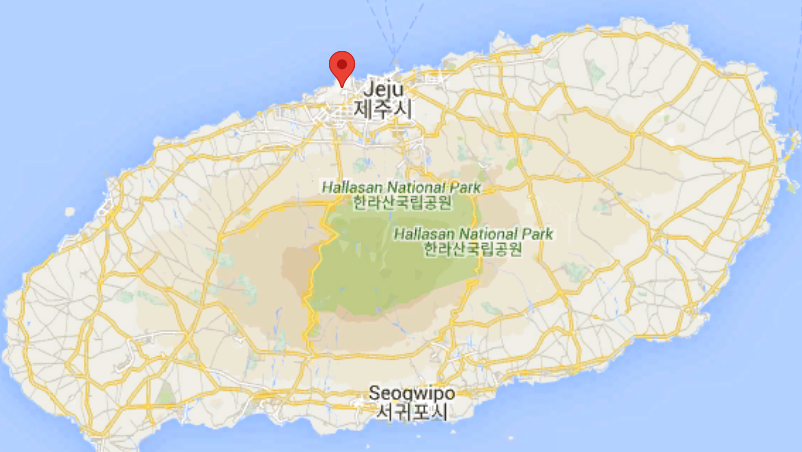
올래국수
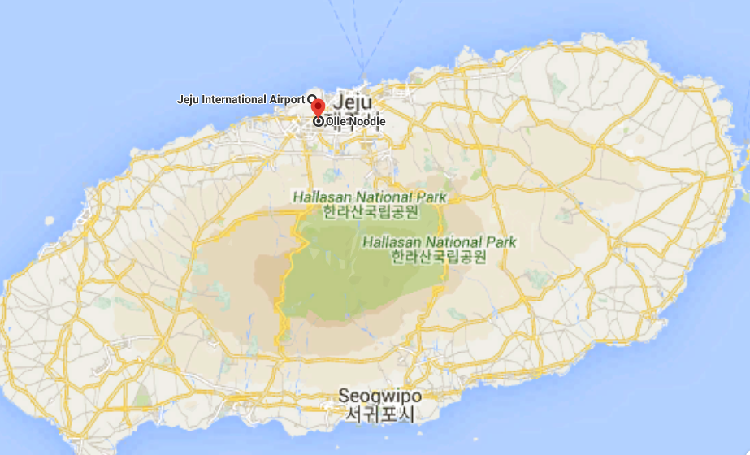
제주하늘을날다
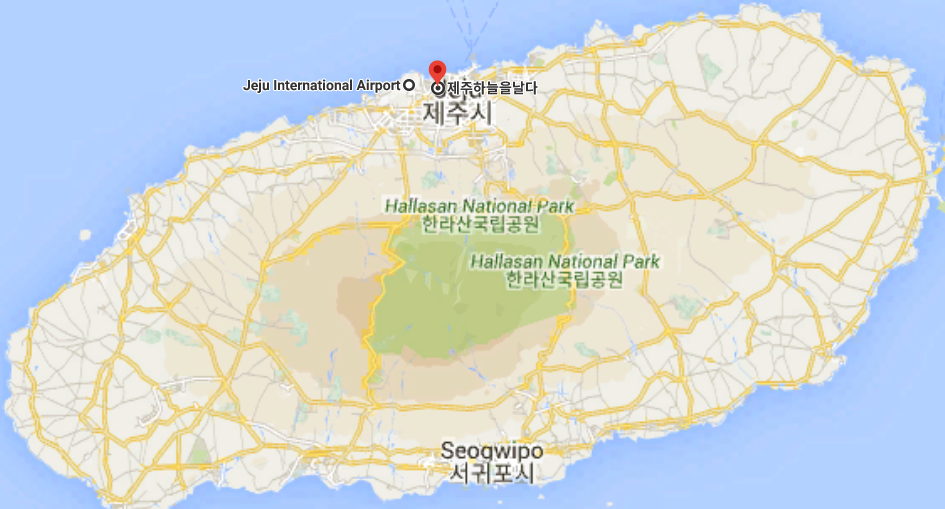
만장굴 (10:00)
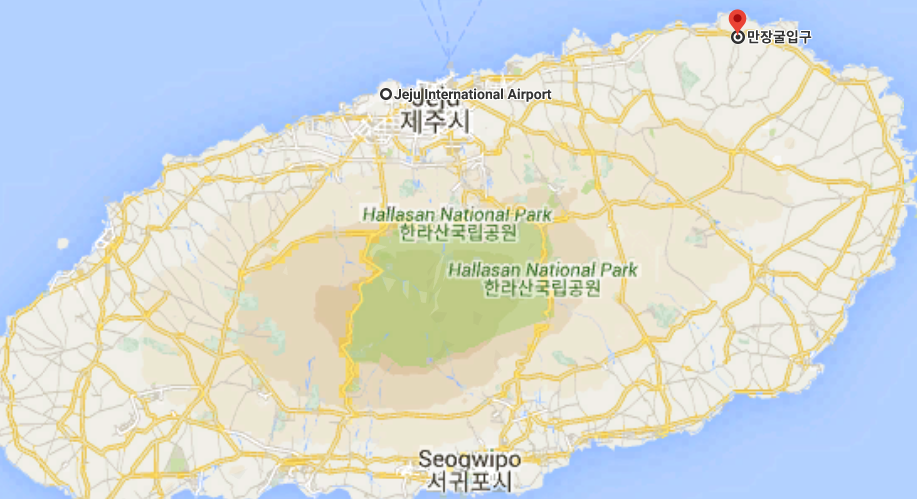
월정리 해수욕장 서핑 (11:00)
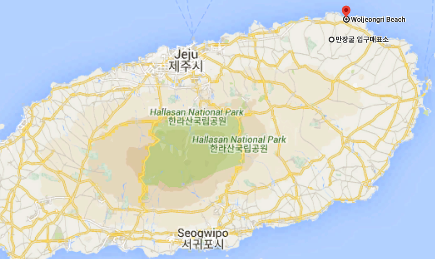
명진전복
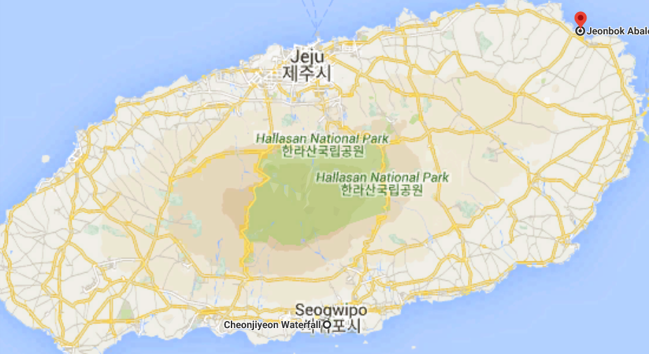
주상절리대 & 제트보트 - ( 주상절리 ) - 제주제트
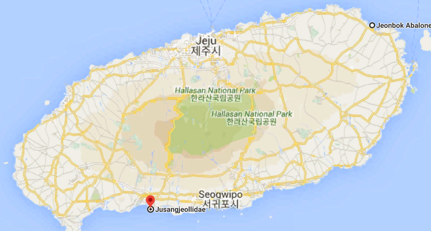
천지연폭포
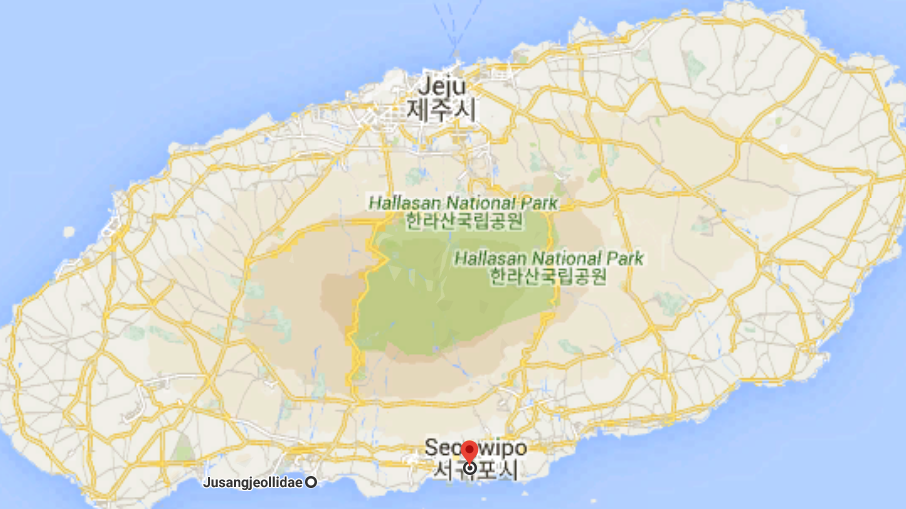
내 목록
윈드1947 카트 테마파크 (10 - 17)
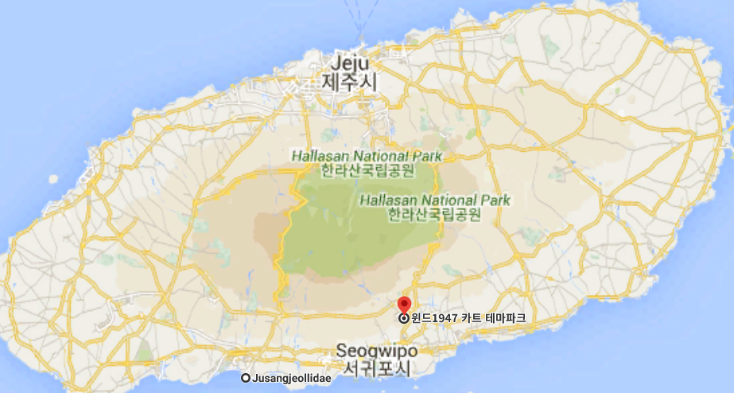
미술관: 아르떼뮤지엄
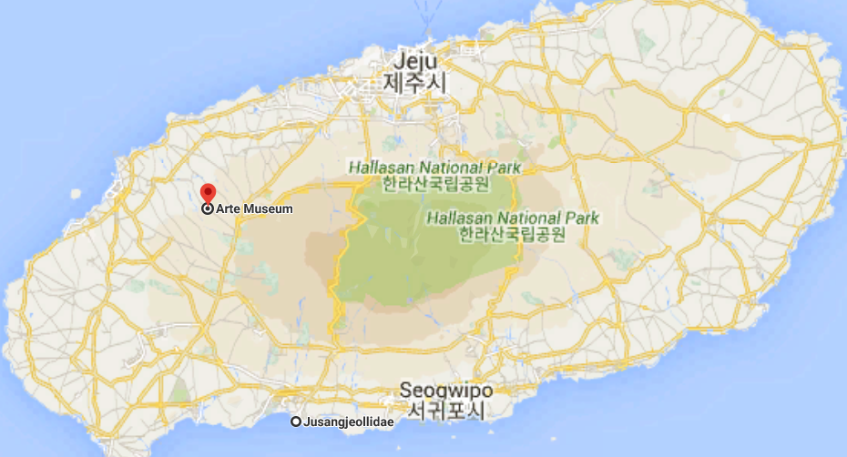
협재해수욕장
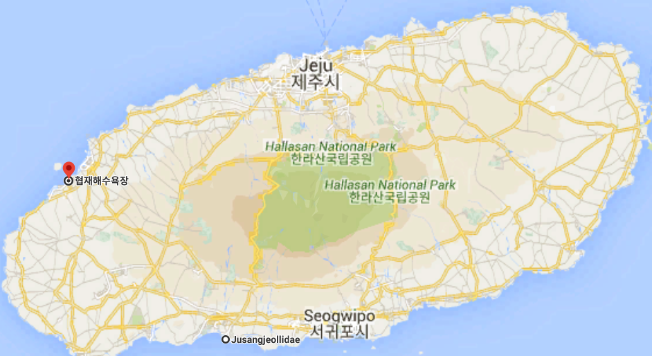
9.81 파크: 자동 고카트
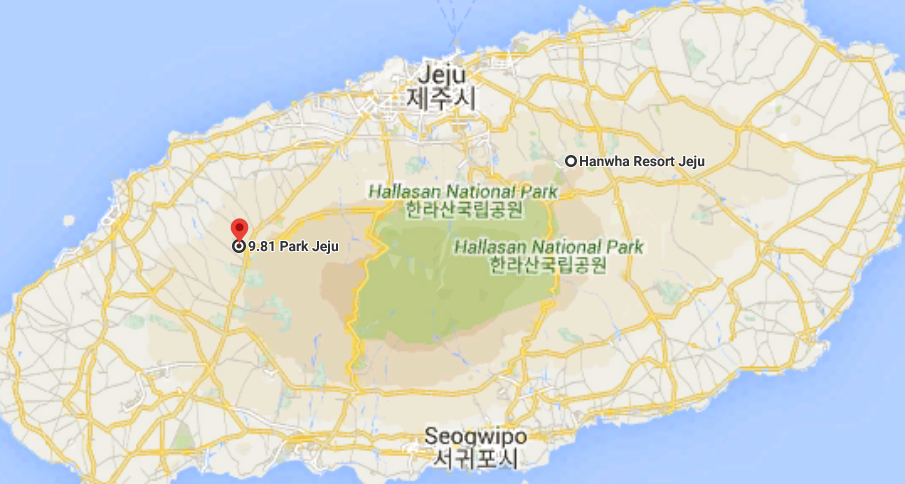
수제버거: 제주시 애월읍 버거리
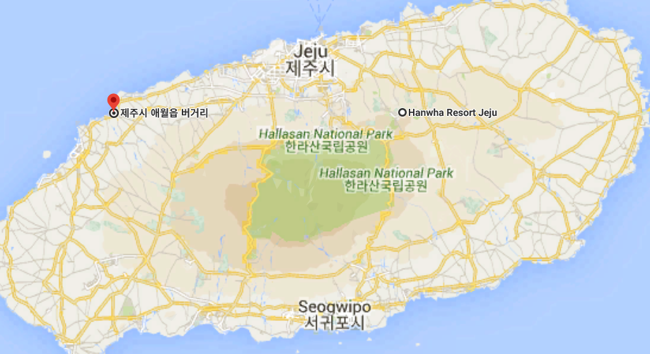
원앙폭포
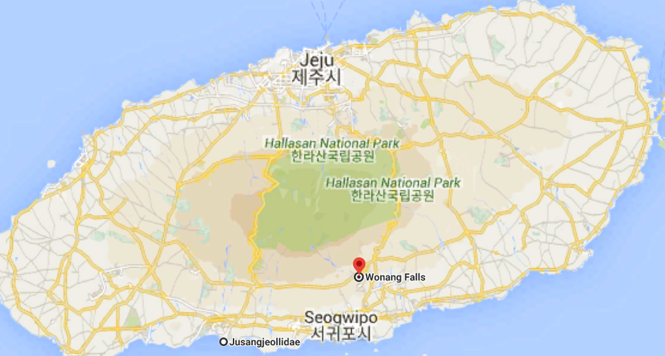
둘째날
한라산
셋째날
aiejfa